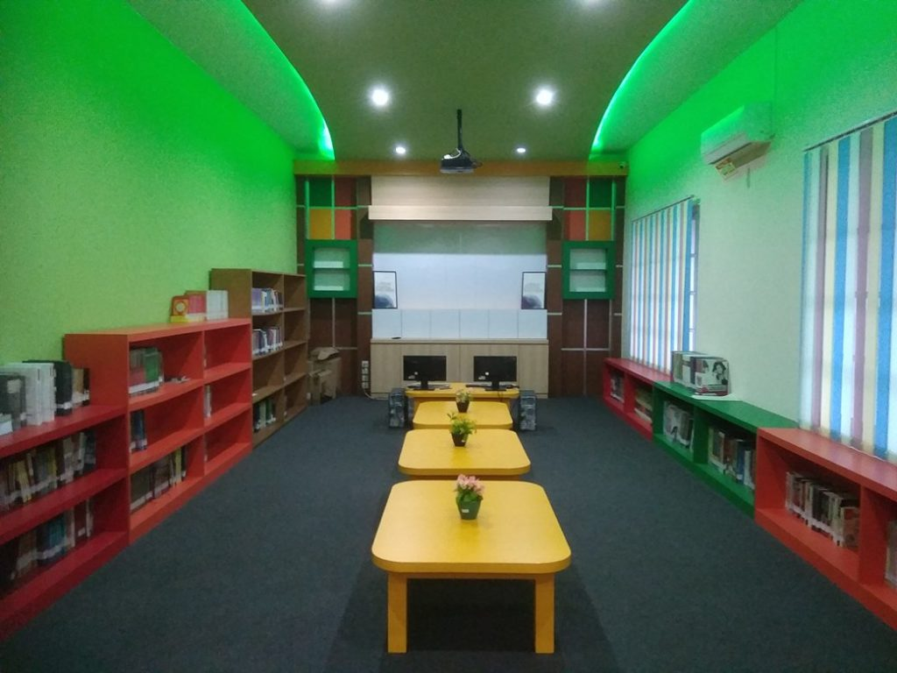
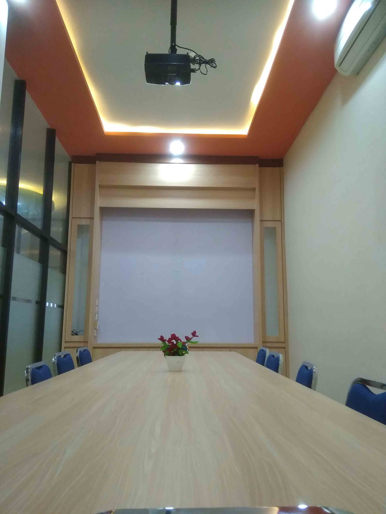
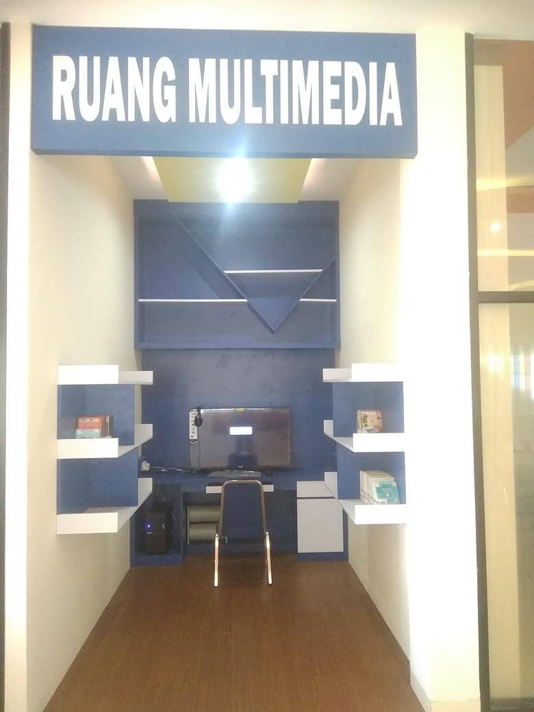
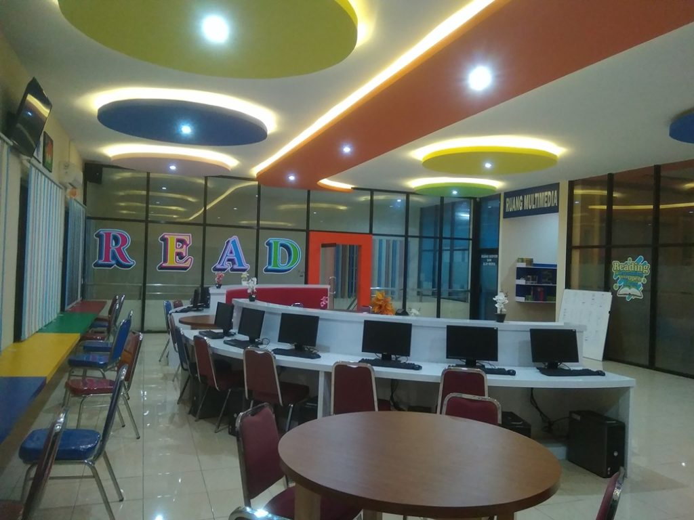
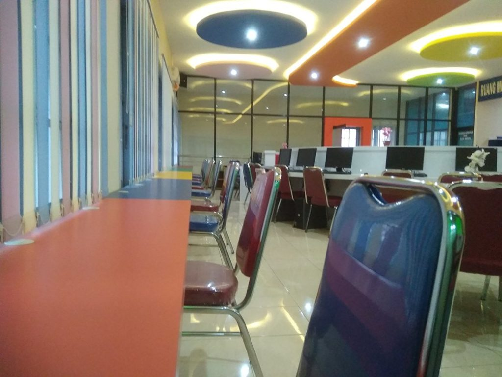

Ruang Mini Teater
Ruang Mini Teater berada di lantai 3 perpustakaan. Ruang yang didesain kedap suara dan dilengkapi dengan pendingin udara ini dapat menampung sekitar 60 orang. Tersedia juga projector untuk presentasi serta sound dengan sistem surround yang cukup nyaman didengar. Ruang ini didesain untuk memfasilitasi kegiatan/acara seperti, pemutaran film, presentasi, workshop, diskusi dsb.

Ruang Referensi
Ruang dengan luasan 4,4 x 9m yang didesain model lesehan dengan 4 meja kecil ini cukup sejuk. Ruang Referensi menyediakan koleksi referensi cukup lengkap, baik terbitan dalam negeri maupun luar negeri. Dilengkapi dengan projector untuk presentasi serta akses internet baik kabel maupun wifi. Ruangan ini dapat digunakan untuk pembelajaran maupun presentasi. Untuk menambah kenyamanan juga dilengkapi dengan asesoris berupa bantal-bantal kecil yang unik.
Ruang Meeting
Ruangan ini secara khusus digunakan untuk meeting kecil atau diskusi. Ruang dengan ukuran 3 m x 6 m mampu menampung sekitar 15 orang. Dilengkapi dengan AC, Projector serta akses internet baik kabel maupun wifi.
Ruang Multimedia
Koleksi CD/DVD tersedia di ruangan ini. Anda dapat mencoba koleksi CD/DVD dengan seperangkat Komputer Multmedia yang lengkap tersedia disini. Ruang dengan luas 2 m x 3 m ini dilengkapi juga dengan sarana headset serta akses internet kabel.
Ruang Komputer
Di area baca ruang referensi tersedia 12 unit komputer Built-Up. Fasilitas ini disediakan khusus untuk akses e-book, mencari bahan ajar/artikel lewat akses internet.
Ruang Baca
Area baca tersedia di lantai 2 (area koleksi Non-referensi) maupun di lantai 3 (area referensi). Di lantai 3 tersedia 4 meja bundar yang dilengkapi masing-masing dengan 4 kursi. Sedangkan di sisi timur memanjang tersedia 5 meja yang dilengkapi fasilitas stop kontak dan kursi sejumlah 15 buah. Pada lantai 2 ada sejumlah 12 meja kecil masing-masing dilengkapi dengan 2 buah kursi dan 4 buah meja besar yang masing-masing dilengkapi dengan 6 buah kursi.
